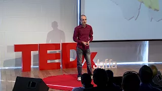

LabeTube
Language Acquisition
Are plants conscious?

Bananas in heaven
How to Learn Skills Faster
What Messi Can Teach Us About Productivity
Why humans run the world
Controlling Your Dopamine
Guided Wim Hof Method Breathing